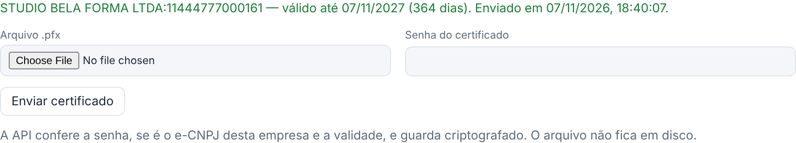

Certificado vencido ou perto de vencer
Sem certificado válido, a empresa não emite. O sistema avisa 30 dias antes.
search Como reconhecer
- No portal, o selo do canto inferior do menu fica amarelo (vence em X dias) ou vermelho (Certificado vencido).
- Na tela inicial do portal aparece o aviso em "Precisa da sua atenção".
- No painel, a coluna Certificado mostra a data de vencimento, e o "Pronta para emitir?" da empresa avisa.
storefront O que o cliente faz
- Renove o certificado A1 com a sua certificadora (ou com o seu contador) antes de vencer.
- Mande o arquivo novo (
.pfx) e a senha para o suporte, por um canal seguro.
support_agent O que o suporte faz
- Abra a ficha da empresa no painel, bloco Certificado digital.
- Escolha o arquivo novo, digite a senha e clique em Enviar certificado. O novo substitui o antigo na hora.
- Confira se aparece em verde a validade nova. Notas que tinham falhado por certificado podem ser reenviadas.
- Passo a passo completo: Certificado e "pronta para emitir".

Erros ao enviar o certificado
| Mensagem | O que fazer |
|---|---|
| Senha incorreta ou o arquivo não é um certificado A1. | Confira a senha com o cliente e se o arquivo é .pfx ou .p12. |
| Este certificado é do CNPJ ..., que não é desta empresa. | O cliente mandou o de outra empresa. Peça o certo. |
| Certificado vencido. | O arquivo enviado é o antigo. Peça o renovado. |
← Voltar para a Central de Ajuda
Última revisão: 08/11/2026